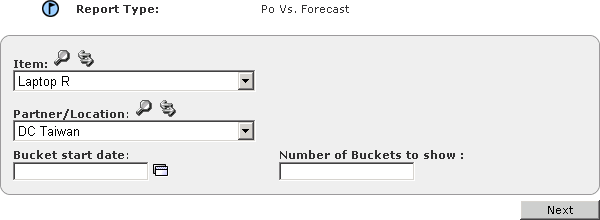

Creating PO vs. Forecast Reports
PO vs. Forecast reports shows purchase order vs. inventory information about one inventory Item at one Location over a defined set of time buckets.
To create a PO
vs. Forecast
report
1 In the Function drop-down list, select Business User.
2 Click the Reports tab.
3 Click On-Demand Reports.
4 In the Report Type drop-down list box, select PO vs. Forecast, then click Go. The
PO vs. Forecast report definition page appears.

5 Enter or select the data for the report:
4 Click Next.
The report appears on a page with 3 sections. The top section summarizes the report options. The middle section lists details of all the alerts that fit within the selected options. The bottom section shows the total number of alerts in the report and how many for each level and status.
Note: You can export the report to a comma-separated value (.CSV) text file. See
"Exporting Reports".